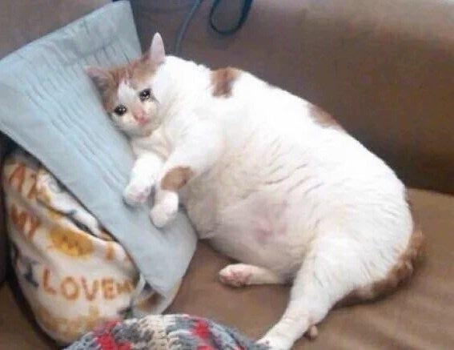

My report page in Development for WEB
My name is Andrei Casian. I was born and raised in Moldova. It's a small country in Eastern part of Europe, with no future. I was always interested in computers programming and technology but for some reaseon I decided to do 2 years of Law in Romania and another 2 years of Law in France. I didn't like it. That's when I decided to try what I really was interested in and it worked! I'm in my 3rd year of Software Development and looking forward to finish it!
My hobbies include reading books, listening to music (tons of it) and podcasts with interesting people as well as drawing.